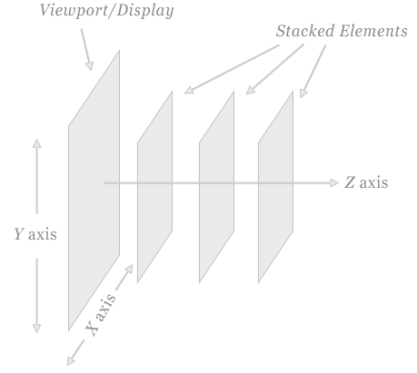
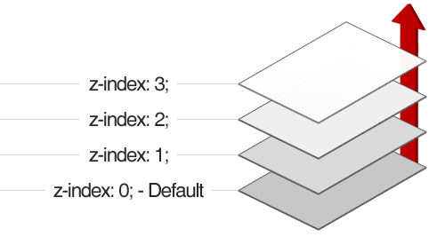
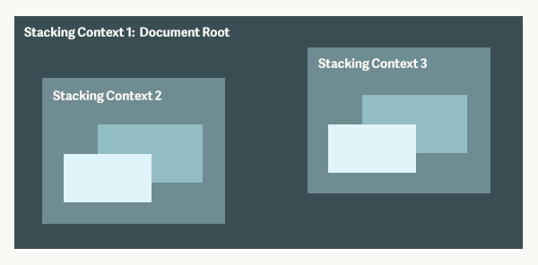

Z-index and Layering with CSS
Why give a hoot about z-index?
Agenda
- Z-index and positioning
- What is stacking order?
- What is stacking context?
- CSS3 properties that cause layering
- Troubleshooting CSS layering tips
What's z-index used for?
 
Z-index changes stacking order and creates a stacking context.
What is positioned?
z-index applies only to objects that have the position property set to fixed, absolute, or relative, aka "positioned elements".
On positioned elements, can use top/left/right/bottom to nudge element to corners, and z-index.
position: fixed;position: absolute;position: relative;Default stacking order
Stacking order with z-index
Change layering with CSS only
Why does z-index 'not work?'
Answer: stacking context on div#3
Stacking context is a group of elements with a common parent that move forward or backward together (atomically) in the stacking order. 
Stacking Context vs DOM
Stacking context is a subset of DOM.
Which CSS properties create stacking context?
- html
- Positioned element with z-index:integer
- Element's opacity < 1, transform, filter, ... more on the next slide
See the Pen CSS(webkit) filters by Rıza Selçuk Saydam (@rss) on CodePen.
CSS Filter creates a stacking context
See the Pen Opacity : CSS-Tricks Almanac by Dennis Gaebel (@grayghostvisuals) on CodePen.
Opacity < 1 creates a stacking context
Position: fixed on Chrome creates a stacking context
See the Pen CSS 3D Transform - Card Flip by Adrian Parr (@adrianparr) on CodePen.
Transform other than none creates stacking context
See the Pen pIgBf by Louis Lazaris (@impressivewebs) on CodePen.
Transform-style: preserve-3d creates a stacking context
See the Pen GLbca by Hugo Giraudel (@HugoGiraudel) on CodePen.
CSS Perspective creates a stacking context
Recap: stacking context vs stacking order

Troubleshooting CSS layering issues
- To use z-index, position the element.
- If elements are within the same stacking context, can use z-index.
- Which ancestors are creating stacking contexts?
- If cannot change stacking context, reorder element in the DOM.
CSS properties that cause stacking context
- Position: fixed on Chrome
- Z-index: integer with positioning
- Transform other than none
- Opacity < 1
- Transform-style: preserve-3d
- Perspective (not 0 or none)
- Filter